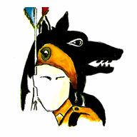

IMMERHOF
Petit ouvrage · Ligne Maginot
Votre parcours
Les stations
0 / 12 écoutées
Touchez une station pour l’écouter.

IMMERHOF
Petit ouvrage · Ligne Maginot
Votre parcours
0 / 12 écoutées
Touchez une station pour l’écouter.
À l’écoute
Immerhof · Association Le Tiburce
Merci d’avoir découvert l’ouvrage d’Immerhof.
Les données de votre visite ont été supprimées.
Vous pouvez maintenant quitter l’audioguide.